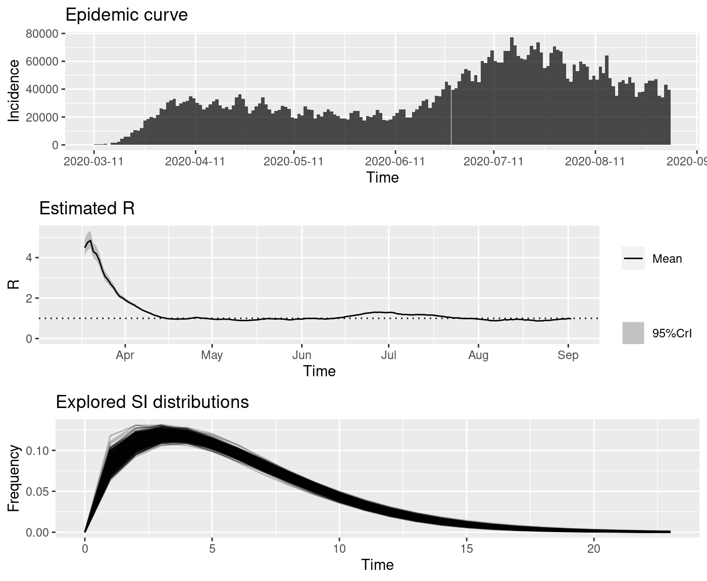
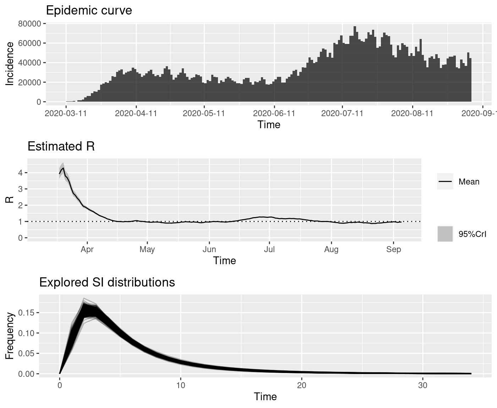
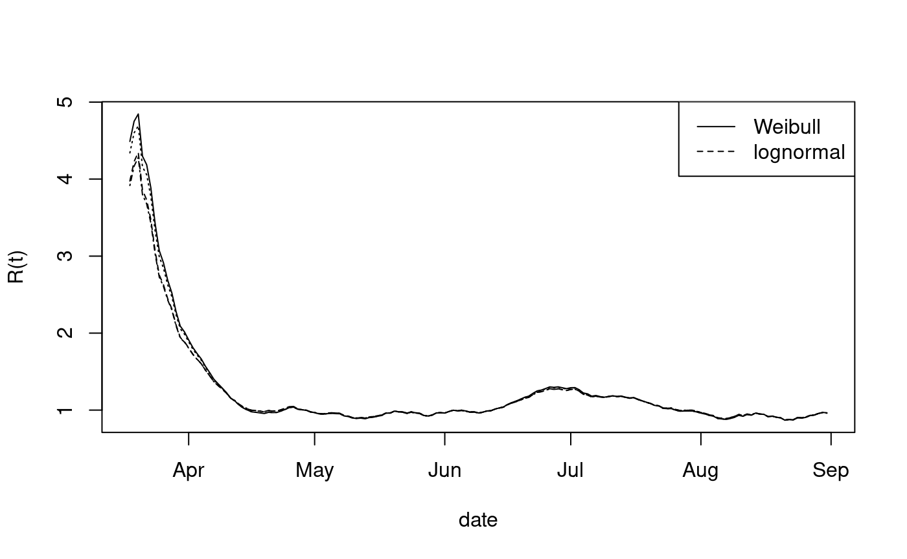

vignettes/doMCMC.Rmd
doMCMC.RmdThe serial interval is defined as the time elapsed between onset of symptoms in an index case, and onset of symptoms in a secondary case infected through contact with the index case.
The distribution of the serial interval plays a role in modeling time-dependent transmission rates. Specifically, following Cori et al. (2013), the instantaneous reproduction number, that we will denote R[t], is defined as \[ R[t] = I[t]/\Sigma_{s=1}^t I[t-s]w[s] \] where \(I[t]\) denotes incidence of infection in period \(t\) and \(w[s]\) is the “infectivity function” which is “approximated by the distribution of the serial interval” (p1506).
This tables are formed to help produce samples from the SI distribution for SARS-Cov-2. The source is Du et al. (2020).
## [1] 361 5head(pos_si_93cn)
## EL ER SL SR type
## 1 16 16 20 20 2
## 2 16 16 20 20 2
## 3 15 15 21 21 2
## 4 16 16 20 20 2
## 5 14 14 16 16 2
## 6 18 18 22 22 2pos_si_93cn is a subset of 468 records with positive serial interval.
dim(cens_si_93cn)
## [1] 468 5cens_si_93cn[10:15,]
## EL ER SL SR type
## 10 11 11 19 19 2
## 11 -9 19 20 20 1
## 12 17 17 22 22 2
## 13 21 21 24 24 2
## 14 -6 22 23 23 1
## 15 -8 20 21 21 1cens_si_93cn constitutes a modification to the serial interval data to avoid introducing negative serial intervals, retaining all 468 records. Any record in which the symptom onset of the secondary case is prior to that of the index case is reformulated with the index case time regarded as interval-censored with onset date known only to lie in an interval of length 28 days, ending one day before the onset date reported for the secondary case.
The crucial resource here is the approach to fitting models to (potentially) doubly interval-censored event time data as developed by N. Reich et al., Statistics in Medicine 2009.
These entities were precomputed Apr 24 2020.
library(coarseDataTools) library(EpiEstim) censans_W = coarseDataTools::dic.fit.mcmc(dat = cens_si_93cn, dist = "W", optim.method="SANN", seed=1234) si_cens_W = coarse2estim(censans_W, thin=10) save(si_cens_W, file="si_cens_W.rda") censans_L = coarseDataTools::dic.fit.mcmc(dat = cens_si_93cn, dist = "L", optim.method="SANN", seed=1234) si_cens_L = coarse2estim(censans_L, thin=10) save(si_cens_L, file="si_cens_L.rda") censans_G = coarseDataTools::dic.fit.mcmc(dat = cens_si_93cn, dist = "G", optim.method="SANN", seed=1234) si_cens_G = coarse2estim(censans_G, thin=10) save(si_cens_G, file="si_cens_G.rda")
On the left we trace the pointwise means of the posterior distribution of SI(t). On the right we give the posterior density of SI(4) for three parametric models used to form the censored data likelihoods.
suppressWarnings({dat = enriched_jhu_data()})
## using temporary cache /tmp/RtmpzyRZWY/BiocFileCachecusa = cumulative_events_ejhu(dat, eventtype="confirmed", alpha3="USA") cusa
## cumulative event data for USA, 2020-01-22 to 2020-09-27
## use plot() to visualize.iusa = form_incident_events(trim_from(cusa, "2020-03-10")) iusa2 = data.frame(I=iusa$count, dates=iusa$dates)
wcens = EpiEstim::estimate_R(iusa2, method="si_from_sample", si_sample=si_cens_W$si_sample, config=make_config(list(n2=50, seed=1)))
## Default config will estimate R on weekly sliding windows.
## To change this change the t_start and t_end arguments.nn = plot(wcens)

lncens = EpiEstim::estimate_R(iusa2, method="si_from_sample", si_sample=si_cens_L$si_sample, config=make_config(list(n2=50, seed=1)))
## Default config will estimate R on weekly sliding windows.
## To change this change the t_start and t_end arguments.nn = plot(lncens)
wpos = EpiEstim::estimate_R(iusa2, method="si_from_sample", si_sample=si_pos_W$si_sample, config=make_config(list(n2=50, seed=1)))
## Default config will estimate R on weekly sliding windows.
## To change this change the t_start and t_end arguments.nn = plot(wpos)
lnpos = EpiEstim::estimate_R(iusa2, method="si_from_sample", si_sample=si_pos_L$si_sample, config=make_config(list(n2=50, seed=1)))
## Default config will estimate R on weekly sliding windows.
## To change this change the t_start and t_end arguments.nn = plot(lnpos)

plot(wcens$dates[-c(1:7)], wcens$R$`Mean(R)`, xlab="date", ylab="R(t)", type="l") lines(lncens$dates[-c(1:7)], lncens$R$`Mean(R)`,lty=2) lines(wpos$dates[-c(1:7)],wpos$R$`Mean(R)`,lty=3) lines(lnpos$dates[-c(1:7)], lnpos$R$`Mean(R)`,lty=4) legend("topright",lty=c(1,2),legend=c("Weibull", "lognormal"))

We conclude that the difference between excluding negative SI reports and censoring the infector times is very small. Further work is needed to employ all the information (i.e., the negative SI values) provided in the Du et al. CDC report.